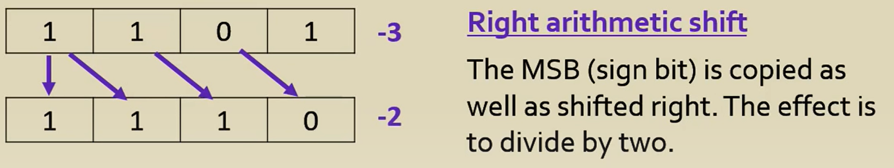

Logic shift- shift all bits, left or right.
shift left (<<) will double the number by 2
0001 << 1 = 0010 << 1 = 0100
1 2 4
right shift will divide by 2 and a modulus of 1 might be left (round the number down)
1101 >> 1 = 0110 >> 1 = 0011 >> 1 = 0001
13 6 mod 1 3 1 mod 1
Arithmetic shift - only right shift
right shift- will preserve the sign bit (round the number up)
(to calculate two's complement, substract 1 and flip all bits to get the absolute value)
1110`0101 >> 1 = 1111`0010 >> 1 = 1111`1001
-27 -14 -7

left arithmetic shiftis the same as left logical shift